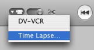

Creating a time-lapse effect
You can create a time-lapse effect when you import video from your camera. This is useful if you want to show the progression of an event (such as a blooming flower) in a fraction of the time it took in real life.

To create a time-lapse effect:
- Turn on your camera, and connect it to your computer. If you need help with this, see Related Topics below.
- In iMovie HD, press the camera icon (shown above), and choose Time Lapse from the pop-up menu.
- Select the Capture Frame checkbox and specify the number of frames from which you want iMovie to capture one frame of video.
- Click OK.
- Import your video into iMovie as you normally do, using the iMovie capture controls. If you need help with this, see Related Topics below.
Related Topics
Connecting a camcorder to your computer
Importing video from your camcorder
 Was this page helpful? Send feedback.
Was this page helpful? Send feedback.